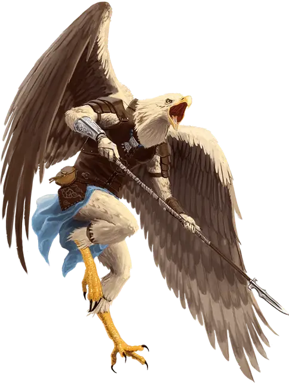

Ааракокра
Aarakocra

Крылатый народ, родом из Стихийного Плана Воздуха, ааракокра парят в небе, где бы они ни находились. Первые ааракокра служили герцогам Ветра Аакуа — могущественным воздушным существам — и были наделены определенной властью своих хозяев над ветрами. Их потомки все еще владеют отголосками этой силы.
С земли ааракокры выглядят как большие птицы, и поэтому их иногда называют птицелюдами. Только когда они спускаются на свои насесты на ветвях или ходят по земле, раскрывается их гуманоидный облик. Стоя прямо, ааракокра может достигать 5 футов высотой. У них длинные, тонкие ноги, заканчивающиеся острыми когтями. Их тела покрывают перья — обычно красные, оранжевые, желтые, коричневые или серые.Их птичьи головы внешне напоминают гибрид попугая и орла.
Особенности ааракокр
Вы обладаете следующими особенностями.
Увеличение характеристик. Выберите одно из: (а) Значение одной характеристики по вашему выбору увеличивается на 2, а другой — на 1; (б) Значение трёх различных характеристик по вашему выбору увеличивается на 1.
Вид существа. Вы — Гуманоид.
Размер. Ваш размер — Средний.
Скорость. Ваша базовая скорость ходьбы — 30 футов.
Полёт. Благодаря вашим крыльям вы обладаете скоростью полёта, равной вашей скорости ходьбы. Вы не можете использовать эту скорость полёта, если вы облачены в средние или тяжёлые доспехи.
Когти. У вас есть когти, которые вы можете использовать для совершения безоружных ударов. Когда вы попадаете атакой ими, удар наносит 1к6 + ваш модификатор Силы рубящего урона, вместо дробящего урона, свойственного безоружным ударам.
Зовущий ветер. Начиная с 3-го уровня, вы можете накладывать заклинание порыв ветра [gust of wind] с помощью этой особенности, без затрат материального компонента. Как только вы наложите заклинание с помощью этой особенности, вы не сможете наложить его подобным образом снова, пока не закончите продолжительный отдых. Вы также можете накладывать это заклинание, используя любые имеющиеся у вас ячейки заклинаний 2-го уровня или выше.
Интеллект, Мудрость или Харизма является вашей базовой характеристикой, когда вы накладываете порыв ветра [gust of wind] с помощью этой особенности (выберите одну из них при выборе этой расы).
Языки. Ваш персонаж может говорить, читать и писать на Общем и еще одном языке, который по вашему мнению подходит для персонажа.